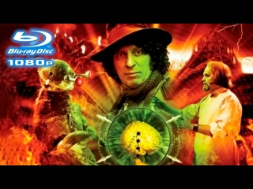
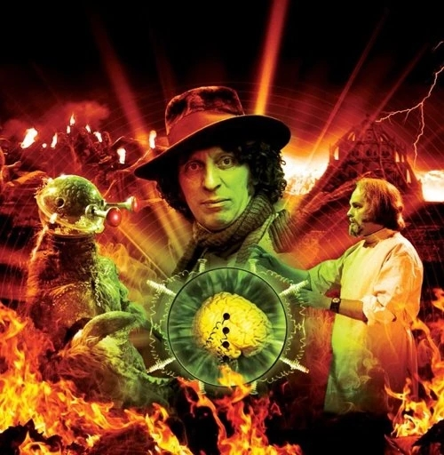
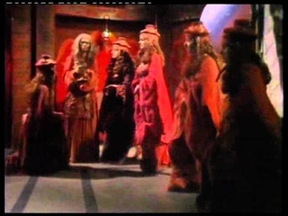

Субтитры: Русские и Английские |  |
|---|---|
Субтитры: только Английские | |
с обновлением визуальных эффектов (cunningmunki) Субтитры: отсутствуют |
The Brain of Morbius
Дата выхода: 3-24 января 1976
Формат: 4 эпизода по 25 мин.
|
ТАРДИС прибывает на планету Карн — мрачный мир, где древний орден Сестёр Карна хранит священное пламя, а в заброшенной обители трудится эксцентричный хирург Соло́н, одержимый созданием идеального тела. Доктор и Сара Джейн быстро понимают, что Соло́н не просто учёный: он прячет мозг Морбиуса — преступника-Повелителя Времени, приговорённого к казни за злодеяния против Галлифрея. Серия выдержана в эстетике готического хоррора с явной отсылкой к «Франкенштейну», а монстр, собранный из частей разных существ, стал одним из самых запоминающихся в классическом сериале.
VHS (редакт.) - июль 1984 | VHS (ориг.) - июль 1990 |
|---|---|
DVD - 21 июля 2008 |  Blu-ray - 20 октября 2025 * Версия в нашей группе |

